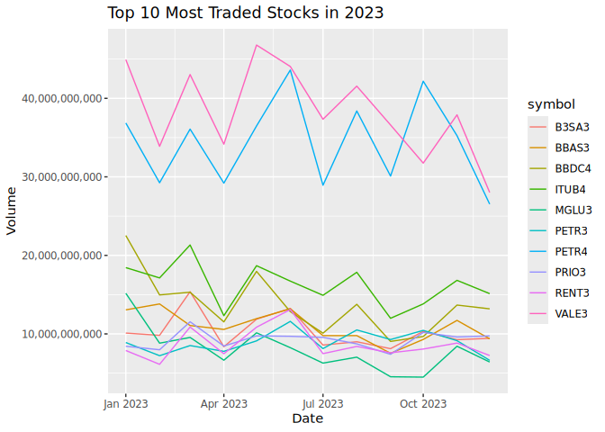
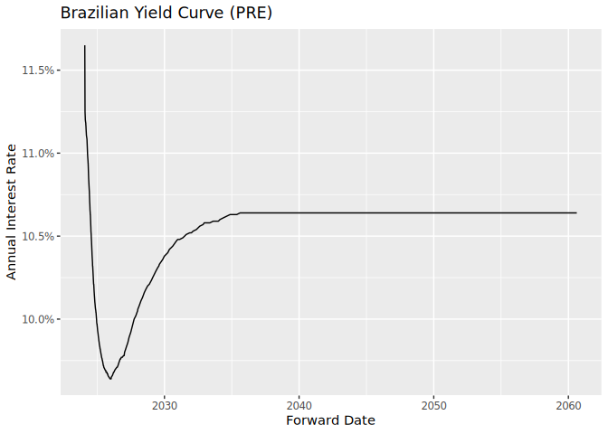
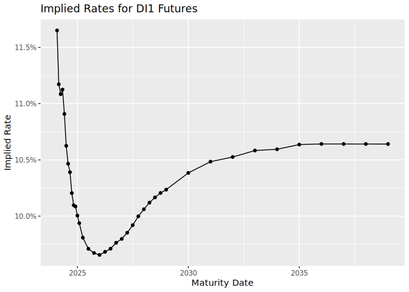

Overview
B3 is the main financial exchange in Brazil, offering access to trading systems for stocks, futures, options, and other financial instruments. The rb3 package provides tools for downloading, processing, and analyzing market data from B3, including:
- Stocks & Equities: Historical price data through COTAHIST files
- Futures Contracts: Settlement prices for futures contracts
- Yield Curves: Historical yield curves calculated from futures contracts
- ETFs & BDRs: Data for Exchange Traded Funds and Brazilian Depositary Receipts
- REITs (FIIs): Data for Brazilian Real Estate Investment Trusts
- Options: Equity and index options contracts
- Market Indices: B3 indices composition and historical data
The package uses webscraping tools to obtain data directly from B3’s website, making it accessible in R as structured datasets. These datasets are valuable for financial analysis, academic research, and investment decision-making.
Installation
# From CRAN (stable version)
install.packages("rb3")
# Development version from GitHub
if (!require(devtools)) install.packages("devtools")
devtools::install_github("ropensci/rb3")Basic Usage
Downloading Data
Execute the following code to download all data you need to start working with rb3:
# Set the rb3.cachedir folder - it must be executed before loading rb3 package
options(rb3.cachedir = "/path/to/your/custom/folder")
library(rb3)
library(bizdays)
# download COTAHIST data from 2000 to 2025
fetch_marketdata("b3-cotahist-yearly", year = 2000:2025)
# download futures settlement prices from 2000 to 2025
fetch_marketdata("b3-futures-settlement-prices", refdate = bizseq("2000-01-01", Sys.Date(), "Brazil/B3"))
# download yield curves from 2018 to 2025
fetch_marketdata("b3-reference-rates",
refdate = bizseq("2018-01-01", Sys.Date(), "Brazil/B3"),
curve_name = c("DIC", "DOC", "PRE")
)
# download indexes composition data - it is necessary to execute `indexes_get()`
fetch_marketdata("b3-indexes-composition")
# download current portfolio for all indexes
fetch_marketdata("b3-indexes-current-portfolio", index = indexes_get(), throttle = TRUE)
# download theoretical portfolio for all indexes
fetch_marketdata("b3-indexes-theoretical-portfolio", index = indexes_get(), throttle = TRUE)
# download historical data for all indexes
fetch_marketdata("b3-indexes-historical-data", index = indexes_get(), year = 2000:2025, throttle = TRUE)Market Data Templates
The rb3 package uses a template system to standardize the downloading and processing of different data types. To see available templates:
library(tidyverse)
library(bizdays)
library(rb3)
# List available templates
list_templates()
#> # A tibble: 9 × 2
#> Template Description
#> <chr> <chr>
#> 1 b3-bvbg-086 Arquivo de Preços de Mercado - BVBG-086
#> 2 b3-cotahist-daily Cotações Históricas do Pregão de Ações - Arq…
#> 3 b3-cotahist-yearly Cotações Históricas do Pregão de Ações - Arq…
#> 4 b3-futures-settlement-prices Preços de Ajustes Diários de Contratos Futur…
#> 5 b3-indexes-composition Composição dos índices da B3
#> 6 b3-indexes-current-portfolio Carteira teórica corrente dos índices da B3 …
#> 7 b3-indexes-historical-data Dados históricos e estatísticas dos índices …
#> 8 b3-indexes-theoretical-portfolio Carteira Teórica dos índices da B3 com pesos…
#> 9 b3-reference-rates Taxas referenciaisDownloading Market Data
The main function for fetching data is fetch_marketdata(), which downloads data based on a template and parameters:
# Download yield curve data for specific dates
fetch_marketdata("b3-reference-rates",
refdate = as.Date("2024-01-31"),
curve_name = "PRE"
)
# Download futures settlement prices
fetch_marketdata("b3-futures-settlement-prices",
refdate = as.Date("2024-01-31")
)
# Download yearly COTAHIST files
fetch_marketdata("b3-cotahist-yearly", year = 2023)Working with Historical Equity Data
# Access the data
ch <- cotahist_get("yearly")
# Filter for stocks
eq <- ch |>
filter(year(refdate) == 2023) |>
cotahist_filter_equity() |>
collect()
# Get top 10 most traded stocks
symbols <- eq |>
group_by(symbol) |>
summarise(volume = sum(volume)) |>
arrange(desc(volume)) |>
head(10) |>
pull(symbol)
# show top 10 most traded stocks
symbols
#> [1] "VALE3" "PETR4" "ITUB4" "BBDC4" "BBAS3" "B3SA3" "PRIO3" "PETR3" "RENT3"
#> [10] "MGLU3"
# Plot the most traded stocks grouped by month
eq |>
filter(symbol %in% symbols) |>
mutate(refdate = floor_date(refdate, "month")) |>
group_by(refdate, symbol) |>
summarise(volume = sum(volume)) |>
# Plot
ggplot(aes(x = refdate, y = volume, color = symbol)) +
geom_line() +
labs(
title = "Top 10 Most Traded Stocks in 2023",
x = "Date",
y = "Volume"
) +
scale_y_continuous(labels = scales::comma)
#> `summarise()` has grouped output by 'refdate'. You can override using the
#> `.groups` argument.
Yield Curve Analysis
# Get Brazilian nominal yield curve (PRE)
yc_data <- yc_brl_get() |>
filter(refdate == "2024-01-31") |>
collect()
# Plot the yield curve
ggplot(yc_data, aes(x = forward_date, y = r_252)) +
geom_line() +
labs(
title = "Brazilian Yield Curve (PRE)",
x = "Forward Date",
y = "Annual Interest Rate"
) +
scale_y_continuous(labels = scales::percent)
Futures Contracts
# Get futures settlement prices
futures_data <- futures_get() |>
filter(commodity == "DI1") |>
collect()
# Calculate implied rates
di1_futures <- futures_data |>
mutate(
maturity_date = maturitycode2date(maturity_code),
business_days = bizdays(refdate, maturity_date, "Brazil/ANBIMA"),
implied_rate = (100000 / price)^(252 / business_days) - 1
)
# Plot the implied rates
ggplot(di1_futures, aes(x = maturity_date, y = implied_rate)) +
geom_line() +
geom_point() +
labs(
title = "Implied Rates for DI1 Futures",
x = "Maturity Date",
y = "Implied Rate"
) +
scale_y_continuous(labels = scales::percent)
Citation
If you use rb3 in your research, please cite it:
To cite rb3 in publications use:
Download and parse public files released by B3 and convert them into
useful formats and data structures common to data analysis
practitioners.
A BibTeX entry for LaTeX users is
@Manual{rb3-package,
title = {Download and Parse Public Data Released by B3 Exchange},
author = {Wilson Freitas and Marcelo Perlin},
year = {2023},
note = {R package version 0.0.8},
url = {https://github.com/ropensci/rb3},
}